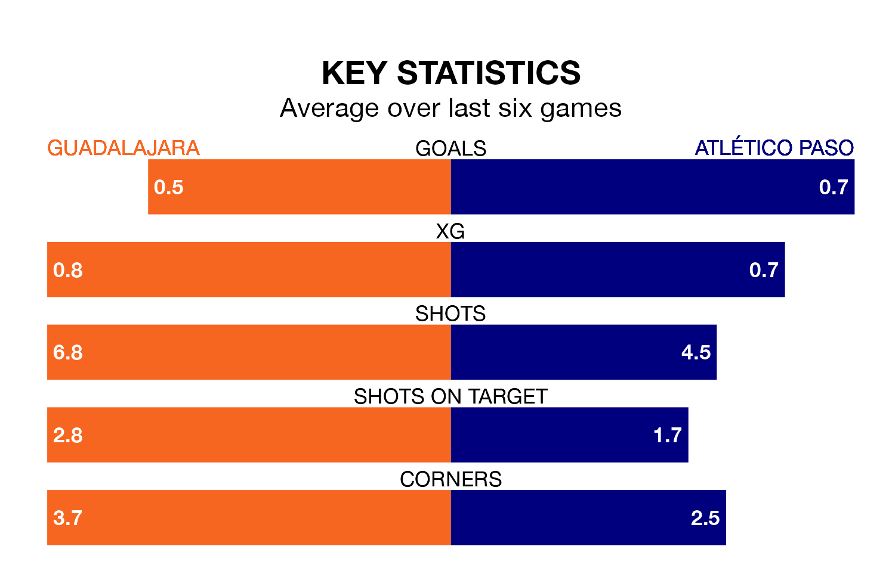

Guadalajara host Atlético Paso on Sunday at the Estadio Pedro Escartín in the Segunda División RFEF Group 5.
In their last league match, on March 17, Guadalajara lost to Llerenense 1-0 away.
Atlético Paso won, 2-1 at home against AD Unión Adarve, with Alejandro Altube Suárez and Armiche Ortega Medina on the scoresheet.
With 20 goals in 27 games so far this season, Atlético Paso are the league's lowest scorers with 0.7 goals per game. But they are conceding fewer than average too, letting in 14 goals at a rate of 0.5 per game.
Guadalajara, meanwhile, are above average scorers, with 1.2 goals per game, compared to a league average of 1.1. They have conceded 1.5 goals per game.
The visitors are fourth in the table after 27 games, of which they have won 11 and drawn 10, earning 43 points.
The home team are eight places behind Atlético Paso in 12th, with 10 wins and four draws putting them on 34 points.
Guadalajara are in mixed form in the Segunda División RFEF Group 5, with two wins and a draw from their last six games.
With two wins and two draws over that period, Atlético Paso's form is slightly better – they have taken eight points from 18, compared to Guadalajara's seven.
In the last three years, Guadalajara and Atlético Paso have played each other on three occasions. Atlético Paso won two of them and they drew once.
Their last meeting was on November 12, when Atlético Paso won 2-0 at home.
Updated: 10:19 (UTC), 22/03/24